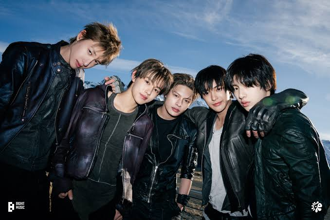

Fashion
เพลง "FaSHioN" ของบอยกรุ๊ปวง CORTIS มีความหมายเกี่ยวกับการสร้างสรรค์สไตล์ที่เป็นของตัวเอง โดยไม่จำเป็นต้องใช้ของราคาแพง แต่สะท้อนความมั่นใจ วิสัยทัศน์ และตัวตนของคนรุ่นใหม่ ใจความสำคัญของเนื้อเพลงสื่อถึงสไตล์ไม่ได้วัดที่ราคา เนื้อเพลงท่อนหลักอย่าง "เสื้อยืดฉันห้าดอลลาร์ กางเกงฉันหมื่นวอน วิสัยทัศน์ฉันระดับพันล้าน แบบ Bezos" สื่อถึงการใส่เสื้อผ้ามือสองหรือของราคาประหยัด แต่มีความมั่นใจและมองการณ์ไกลระดับมหาเศรษฐี (เปรียบเทียบกับ Jeff Bezos) การผสมผสานวัฒนธรรมและย่านดังในเกาหลี มีการกล่าวถึงย่านสำคัญในกรุงโซล เช่น ตลาดดงมโย (แหล่งรวมเสื้อผ้ามือสอง/วินเทจ),ฮงแด (แหล่งรวมวัยรุ่นและจุดประกายความสร้างสรรค์)และ ชองดัมดง (ย่านหรูหราไฮโซ) สื่อถึงการรวมกลุ่มกันจากจุดเริ่มต้นเรียบง่าย แล้วนำสไตล์ของตัวเองไปสร้างกระแสจนสะเทือนไปถึงใจกลางเมือง กล่าวถึงนิยามคำว่าแฟชั่นในแบบของตัวเอง แฟชั่นไม่ใช่การวิ่งตามแบรนด์เนมแพงๆ หรือทำตามคนอื่น แต่คือการเลือกหยิบจับสิ่งรอบตัว (เช่น ของวินเทจมือสอง) มาแมตช์ให้ออกมาสดใหม่และเป็นเอกลักษณ์เฉพาะตัว
